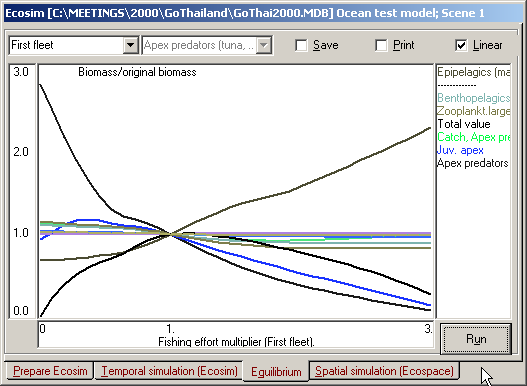

This analysis takes the partial derivatives of the differential equations which define Ecosim (dB/dt = f(fishing rate, predation rate, etc.) with regard to fishing mortality (dB/dF), and sets these equal zero to identify the biomass values that would result from the continued application of the different levels of fishing mortality (F).
The analysis can be performed by varying F for different fleet (in which case the x-axis is a multiplier of its effort) or for different groups (in which case the x-axis has the dimension /year).
The results consist of a plot, centreed about the Ecopath baseline value of F with, on the left, the biomasses of different groups resulting from low F (including F = 0 at the leftmost side of the graph), and on the right, the biomasses resulting from increasing effort above its Ecopath baseline.
To accommodate a large number of groups, the y-scale can be represented as multiple of the biomasses in the underlying Ecopath files, with 8x the upper, and 1/8 the lower limit; further a linear scale for the biomass ratios can be activated by pressing the ‘linear-scale’ button.
Also, the total value and the total catch is shown on the plot (unless hidden using the ‘Hide’ button in Ecosim. This catch line often takes a roughly parabolic form, as appropriate given that it roughly corresponds to the catch levels predicted by surplus-production models.
Though most Ecosim harvest policy analyses are conducted by varying regulatory policies applied to fishing fleets, a command button on the Equilibrium form in Ecosim can be used to carry out a series of long term (100+yr) simulations to estimate single species MSY and Fmsy reference points and to evaluate ecosystem-scale performance if these reference points were simultaneously implemented. Three types of results are produced by the analysis:
Note that step (2) is not the same as producing an estimate of the change in MSY that would be expected if the Fmsy from (1) were applied to just one group at a time, while holding F’s for all other groups at Ecopath base values but allowing dynamic responses in all biomasses. That assessment typically produces a more optimistic estimate of MSY for each group than results from holding other groups constant as in (1), due to increases in food species abundances and decreases in predator abundances when any one group is harvested harder.
Three products are produced by the analysis. First, EwE writes a csv (comma delimited text) file for use in Excel. The file is placed in the same folder as the current database, and has a row for each harvested group and the following fields:
Group name;
Ecopath base F;
Single species Fmsy estimate (holding other groups constant);
Single species MSY estimate (holding other groups constant);
Ecosystem-scale MSY estimate (MSY for the group if all other groups were harvested at Fmsy).
Second, EwE produces a bar chart showing the single species MSY estimates and corresponding MSY estimates if all other groups were harvested at Fmsy; this chart allows quick identification of groups for which the single-species analysis would be overly optimistic or conservative if MSY harvest policies were applied to all other species at the same time. Third, EwE produces a bar-chart matrix, with each row of the chart representing 10% reduction in F from Fmsy for one group, and the bars across this row representing resultant change in equilibrium yield for each of the other harvested groups.
A particularly important result from the analysis is to help detect possible errors in Ecosim parameter settings. It is very common for default Ecosim “flow control” or vulnerability settings (v = 2) to result in Fmsy estimates that are far too optimistic, especially for species/groups that are far below natural (unfished) biomass equilibrium in the Ecopath base state. The flow control column for such groups should be assigned high values to represent the prediction that the group could eat much more prey if allowed to recover in biomass, which also represents the prediction that there would not be much further improvement in compensatory response with further biomass decrease.

Figure 9.10. Ecosim equilibrium analysis, an ecosystem-level Yield-per-Recruit analysis.